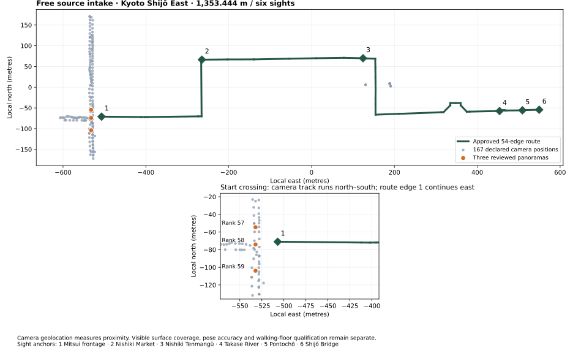
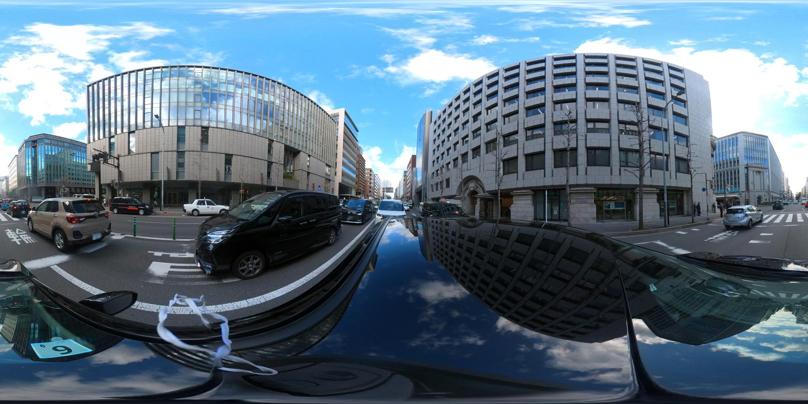
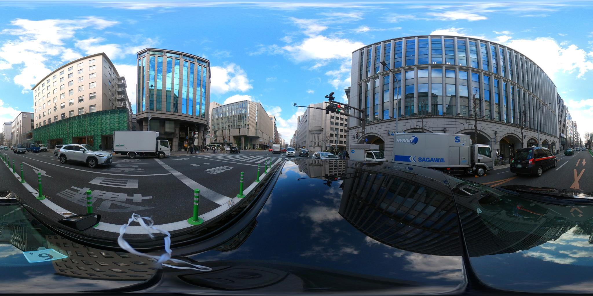

Shijō–Karasuma crossing
Actual freely licensed source photographs · reviewed 14 November 2026
Three native panoramas support a façade-overlap experiment. Their camera track runs north–south, 25–41 m from the approved route start. Continuous eastward walking, measured floors, metric scale and night coverage remain unqualified.

| Source | Declared distance to route | Actual inspection |
|---|---|---|
| Rank 57 · 09:26:47 JST | 30.07 m · edge 1 start | Recurring corner façades and crossing approach; vehicles obscure lower surfaces. |
| Rank 58 · 09:26:52 JST | 25.36 m · edge 1 start | Four corner buildings, arcades, street markings and daylight shadows. |
| Rank 59 · 09:26:57 JST | 41.37 m · edge 1 start | Reverse side of the crossing; delivery vehicles and capture roof obscure ground. |

Unchanged 2,048 × 1,024 service preview. Full HD acquisition is 6,080 × 3,040; receipt and SHA-256 are retained.

Unchanged service preview. The lower hemisphere contains the capture vehicle and reflected buildings.

Unchanged service preview. Traffic, stitching and occlusion require independent geometric review.
Method and qualification limits · Source and hash manifest · Complete bounded query measurements